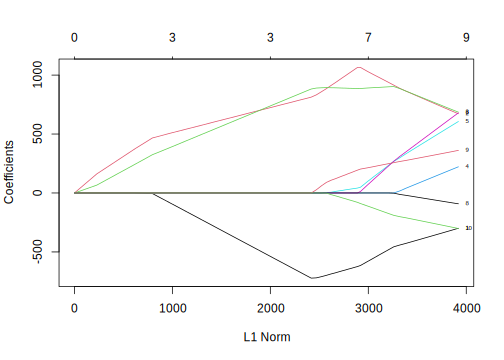

9.2 Principal Components Regression and Partial Least Square
In real-life applications, explanatory variables are usually related to each other, containing similar information. For example, in the previous chapter, we used expenditure variables to predict consumer income. In that model, store expenditure (store_exp), online expenditure (online_exp), number of store transactions (store_trans), and number of online transactions (online_trans) are correlated to a certain extent, especially the number of transactions and expenditure. If there is a strong correlation among explanatory variables, then the least square-based linear regression model may not be robust. If the number of observations is less than the number of explanatory variables, the standard least square method cannot provide a unique set of coefficient estimates. We can perform data preprocessing, such as remove highly correlated variables with a preset threshold for such cases. However, this approach cannot guarantee a low correlation of the linear combination of the variables with other variables. In that case, the standard least square method will still not be robust. We need to be aware that removing highly correlated variables is not always guarantee a robust solution. We can also apply feature engineering procedures to explanatory variables such as principal component analysis (PCA). By using principal components, we can ensure they are uncorrelated with each other. However, the drawback of using PCA is that these components are linear combinations of original variables, and it is difficult to explain the fitted model. Principal component regression (PCR) is described in more detail in (W 1965). It can be used when there are strong correlations among variables or when the number of observations is less than the number of variables.
In theory, we can use PCR to reduce the number of variables used in a linear model, but the results are not good. Because the first a few principal components may not be good candidates to model the response variable. PCA is unsupervised learning such that the entire process does not consider the response variable. In PCA, it only focuses on the variability of explanatory variables. When the independent variables and response variables are related, PCR can well identify the systematic relationship between them. However, when there exist independent variables not associated with response variable, it will undermine PCR’s performance. We need to be aware that PCR does not make feature selections, and each principal component is a combination of original variables.
Partial least square regression (PLS) is the supervised version of PCR. Similar to PCR, PLS can also reduce the number of variables in the regression model. As PLS is also related to the variables’ variance, we usually standardize or normalize variables before PLS. Suppose we have a list of explanatory variables \(\mathbf{X}=[X_{1},X_{2},...,X_{p}]^{T}\), and their variance-covariance matrix is \(\Sigma\). PLS also transforms the original variables using linear combination to new uncorrelated variables \((Z_{1} , Z_{2} , \ldots , Z_{m})\). When \(m=p\), the result of PLS is the same as OLS. The main difference between PCR and PLS is the process of creating new variables. PLS considers the response variable.
PLS is from Herman Wold’s Nonlinear Iterative Partial Least Squares (NIPALS) algorithm (Wold 1973; Wold and Jöreskog 1982) . Later NIPALS was applied to regression problems, which was then called PLS . PLS is a method of linearizing nonlinear relationships through hidden layers. It is similar to the PCR, except that PCR does not take into account the information of the dependent variable when selecting the components, and its purpose is to find the linear combinations (i.e., unsupervised) that capture the most variance of the independent variables. And PLS maximizes the linear combination of dependencies with the response variable. In the current case, the more complicated PLS does not perform better than simple linear regression. We will not discuss the PLS algorithm’s detail, and the reference mentioned above provides a more detailed description of the algorithm.
We focus on using R library caret to fit PCR and PLS models. Let us use the 10 survey questions (Q1-Q10) as the explanatory variables and income as the response variable. First load the data and preprocessing the data:
library(lattice)
library(caret)
library(dplyr)
library(elasticnet)
library(lars)
# Load Data
sim.dat <- read.csv("http://bit.ly/2P5gTw4")
ymad <- mad(na.omit(sim.dat$income))
# Calculate Z values
zs <- (sim.dat$income - mean(na.omit(sim.dat$income)))/ymad
# which(na.omit(zs>3.5)) find outlier
# which(is.na(zs)) find missing values
idex <- c(which(na.omit(zs > 3.5)), which(is.na(zs)))
# Remove rows with outlier and missing values
sim.dat <- sim.dat[-idex, ]Now let’s define explanatory variable matrix (xtrain) by selecting these 10 survey questions columns, and define response variable (ytrain):
We also set up random seed and 10-folder cross-validation:
Fit PLS model using number of explanatory variables as the hyper-parameter to tune. As there are at most 10 explanatory variables in the model, we set up the hyper-parameter tuning range to be 1 to 10:
plsTune <- train(xtrain, ytrain,
method = "pls",
# set hyper-parameter tuning range
tuneGrid = expand.grid(.ncomp = 1:10),
trControl = ctrl)
plsTune## Partial Least Squares
##
## 772 samples
## 10 predictor
##
## No pre-processing
## Resampling: Cross-Validated (10 fold)
## Summary of sample sizes: 696, 693, 694, 694, 696, 695, ...
## Resampling results across tuning parameters:
##
## ncomp RMSE Rsquared MAE
## 1 27777 0.6534 19845
## 2 24420 0.7320 15976
## 3 23175 0.7590 14384
## 4 23011 0.7625 13808
## 5 22977 0.7631 13737
## 6 22978 0.7631 13729
## 7 22976 0.7631 13726
## 8 22976 0.7631 13726
## 9 22976 0.7631 13726
## 10 22976 0.7631 13726
##
## RMSE was used to select the optimal model using
## the smallest value.
## The final value used for the model was ncomp = 7.From the result, we can see that the optimal number of variables is 7. However, if we pay attention to the RMSE improvement, we will find only minimum improvement in RMSE after three variables. In practice, we could choose to use the model with three variables if the improvement does not make a practical difference, and we would rather have a simpler model.
We can also find the relative importance of each variable during PLS model tuning process, as described using the following code:
plsImp <- varImp(plsTune, scale = FALSE)
plot(plsImp, top = 10, scales = list(y = list(cex = 0.95)))
The above plot shows that Q1, Q2, Q3, and Q6, are more important than other variables.Now let’s fit a PCR model with number of principal components as the hyper-parameter:
# Set random seed
set.seed(100)
pcrTune <- train(x = xtrain, y = ytrain,
method = "pcr",
# set hyper-parameter tuning range
tuneGrid = expand.grid(.ncomp = 1:10),
trControl = ctrl)
pcrTune## Principal Component Analysis
##
## 772 samples
## 10 predictor
##
## No pre-processing
## Resampling: Cross-Validated (10 fold)
## Summary of sample sizes: 696, 693, 694, 694, 696, 695, ...
## Resampling results across tuning parameters:
##
## ncomp RMSE Rsquared MAE
## 1 45958 0.03243 36599
## 2 32460 0.52200 24041
## 3 23235 0.75774 14516
## 4 23262 0.75735 14545
## 5 23152 0.75957 14232
## 6 23133 0.76004 14130
## 7 23114 0.76049 14129
## 8 23115 0.76045 14130
## 9 22991 0.76283 13801
## 10 22976 0.76308 13726
##
## RMSE was used to select the optimal model using
## the smallest value.
## The final value used for the model was ncomp = 10.From the output, the default recommendation is ten components. However, if we pay attention to RMSE improvement with more components, we will find little difference after the model with three components. Again, in practice, we can keep models with three components.
Now let’s compare the hyper-parameter tuning process for PLS and PCR:
# Save PLS model tuning information to plsResamples
plsResamples <- plsTune$results
plsResamples$Model <- "PLS"
# Save PCR model tuning information to plsResamples
pcrResamples <- pcrTune$results
pcrResamples$Model <- "PCR"
# Combine both output for plotting
plsPlotData <- rbind(plsResamples, pcrResamples)
# Leverage xyplot() function from lattice library
xyplot(RMSE ~ ncomp, data = plsPlotData, xlab = "# Components",
ylab = "RMSE (Cross-Validation)", auto.key = list(columns = 2),
groups = Model, type = c("o", "g"))
The plot confirms our choice of using a model with three components for both PLS and PCR.
References
W, Massy. 1965. “Principal Components Regression in Exploratory Statistical Research.” Journal of the American Statistical Association 60: 234–46.
Wold, Herman. 1973. “Nonlinear Iterative Partial Least Squares (Nipals) Modelling: Some Current Developments.” Academic Press, 383–407.
Wold, Herman, and K. G. Jöreskog. 1982. Systems Under Indirect Observation: Causality, Structure, Prediction. North Holland, Amsterdam.